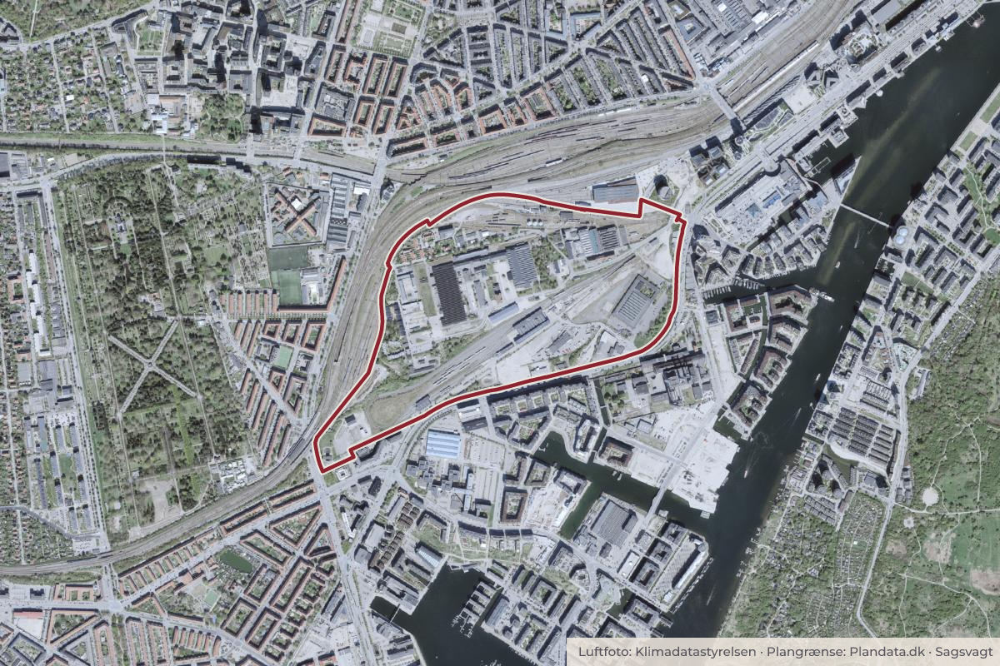

Behandlet 20. oktober, Vesterbro Lokaludvalg
Orientering om høring om lokalplan for Jernbanebyen

Kort: © OpenStreetMap-bidragydere. Plangrænse: Plandata.dk, København Kommune.

Kort fortalt
- Forslaget
- Vesterbro Lokaludvalg tager orienteringen om lokalplanforslaget for Jernbanebyen og Taskforce for Jernbanebyens planlagte aktiviteter i høringsperioden til efterretning.
- Hvem
- Vesterbro Lokaludvalg
- Hvornår
- Tirsdag 20. oktober 2026
- Status
- Behandlet. Referatet med beslutningen er ikke offentliggjort endnu.
- Næste skridt
- Efter den offentlige høring vil forvaltningerne behandle de indkomne høringssvar og forelægge lokalplanen og kommuneplantillægget til endelig politisk behandling.
Er noget forkert her? Skriv til os
Læs hele sagen Kommunens egen tekst
Indstilling
Forpersonen foreslår,
• At Vesterbro Lokaludvalg tager orienteringen om lokalplanforslaget for Jernbanebyen og Taskforce for Jernbanebyens planlagte aktiviteter i høringsperioden til efterretning.
Problemstilling
Borgerrepræsentationen besluttede den 8. oktober 2026 at sende et revideret forslag til lokalplan for Jernbanebyen med tilhørende kommuneplantillæg og miljøvurderinger i otte ugers offentlig høring.
Lokalplanforslaget har tidligere været i høring i efteråret 2024, hvor Vesterbro Lokaludvalg afgav et omfattende høringssvar. Efterfølgende har det været nødvendigt at revidere forslaget, særligt som følge af Banedanmarks indsigelse vedrørende støj fra jernbanens arbejdsarealer. Der er desuden indarbejdet en række andre ændringer, blandt andet på baggrund af den tidligere høring.
Hovedstrukturen i lokalplanforslaget er fastholdt. Planen muliggør ca. 520.000 etagemeter ny bebyggelse i Jernbanebyen, der skal udvikles til et blandet byområde med boliger, erhverv, skole, daginstitutioner, kultur- og fritidsfaciliteter samt grønne områder.
De væsentligste ændringer i det reviderede forslag vedrører:
• Støj: Nye erhvervsbygninger og et parkeringshus langs Otto Busses Vej skal fungere som støjafskærmning mod Banedanmarks kommende arbejdsbase.
• Skole og kultur: Der gives mulighed for yderligere 3.000 m² bebyggelse i det nordlige område til skole og kulturelle funktioner i Vognværkstedet.
• Bygninger og byrum: Der er indarbejdet ændringer i blandt andet bebyggelsesstruktur, bevaringsværdige bygninger og beplantning på baggrund af den tidligere høring.
• Borgerrepræsentationen har desuden tiltrådt, at forvaltningerne frem mod den endelige behandling skal fremlægge en plan for realisering og finansiering af en sammenhængende gang- og cykelforbindelse fra Ingerslevsgade gennem Jernbanebyen og over metroens klargøringscenter.
Se Borgerrepræsentationens beslutning den 8. oktober 2026:
https://www.kk.dk/dagsordener-og-referater/Borgerrepr%C3%A6sentationen/m%C3%B8de-08102026/referat/punkt-5
Læs Lokaludvalgets høringssvar tilbage fra 2024 her: https://vesterbrolokaludvalg.kk.dk/sites/default/files/2024-11/01.11.24_vesterbro_lokaludvalgs_hoeringssvar_om_lokalplan_for_jernbanebyen.pdf
Løsning
Lokaludvalgets Taskforce for Jernbanebyen har planlagt to konkrete nedslag i høringsperioden, som skal bidrage til at kvalificere lokaludvalgets kommende høringssvar.
10. november 2026 kl. 19-21 – Borgermøde i Spor10
På borgermødet vil:
Klima-, Miljø- og Teknikforvaltningen præsentere lokalplanforslaget og fortælle om den udvikling, som planen muliggør.
DSB Ejendomsudvikling fortælle om visionerne for området og områdets kvaliteter.
Vesterbro Lokaludvalg sætte ord på de lokale perspektiver på planerne.
Der vil desuden være mulighed for at stille spørgsmål og komme med bemærkninger til lokalplanforslaget.
24. november 2026 – Temamøde om arkitektur i Jernbanebyen
Taskforce planlægger et temamøde med fokus på, hvordan arkitekturen er håndteret i lokalplanforslaget, herunder de arkitektoniske principper og rammerne for den kommende bebyggelse.
Der henvises til et særskilt punkt på indeværende dagsorden om projektforslaget for arrangementet.
Lokaludvalgets høringssvar
Taskforce for Jernbanebyen vil med afsæt i lokaludvalgets tidligere høringssvar, det reviderede lokalplanforslag og input fra de to arrangementer udarbejde et forslag til høringssvar.
Forslaget vil blive forelagt lokaludvalget til godkendelse inden høringsfristens udløb.
Økonomi
-
Videre proces
Efter den offentlige høring vil forvaltningerne behandle de indkomne høringssvar og forelægge lokalplanen og kommuneplantillægget til endelig politisk behandling.
Kilde: Københavns Kommune, Vesterbro Lokaludvalg, referat fra mødet tirsdag 20. oktober 2026, punkt 23. Læs den originale sag hos kommunen.
Steder i sagen: Jernbanebyen